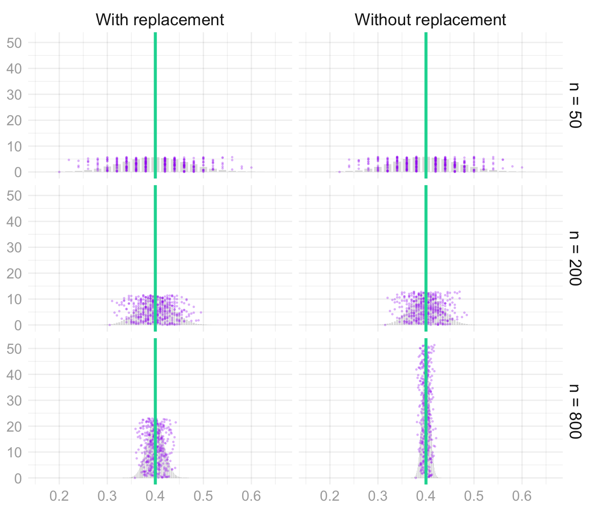

pollurl = "https://pollev.com/davidahirshberg"
lecture = function(n, id=NULL) {
if(is.null(id)) {
sprintf("https://qtm285-1.github.io/assets/lectures/Lecture%d.html", n) }
else {
sprintf("https://qtm285-1.github.io/assets/lectures/Lecture%d.html#%s", n, id)
}
}
homework = function(n, id=NULL) {
if(is.null(id)) {
sprintf("https://qtm285-1.github.io/assets/homework/week%d-homework.html", n) }
else {
sprintf("https://qtm285-1.github.io/assets/homework/week%d-homework.html#%s", n, id)
}
}Homework — Random Variables, Moments, and the Standard Deviation
Download this assignment — unzip it, open homework-random-variables-and-moments.qmd in Positron, and answer inside the answer blocks.
class.theme = theme(plot.background = element_rect(fill = "transparent", colour = NA),
panel.background = element_rect(fill = "transparent", colour = NA),
legend.background = element_rect(fill="transparent", colour = NA),
legend.box.background = element_rect(fill="transparent", colour = NA),
legend.key = element_rect(fill="transparent", colour = NA),
axis.ticks.x = element_blank(),
axis.ticks.y = element_blank(),
axis.text.x = element_text(colour = "#aaaaaa"),
axis.text.y = element_text(colour = "#aaaaaa"),
axis.title.x = element_text(colour = "#aaaaaa"),
axis.title.y = element_text(colour = "#aaaaaa", angle=90)
)
theme_set(class.theme)
theme_update(axis.title.x = element_blank(),
axis.title.y = element_blank())
simplified.theme = theme_get()
theme_update(axis.text.x = element_blank(),
axis.text.y = element_blank())
blank.theme = theme_get()
theme_update(panel.grid.major=element_line(color=rgb(1,0,0,.1, maxColorValue=1)),
panel.grid.minor=element_line(color=rgb(0,1,0,.1, maxColorValue=1)))
grid.theme = theme_get()
whitebg.theme = function(lightgray="#cccccc", gridcolor=rgb(0,0,0,.07, maxColorValue=1), labs=FALSE) {
theme(
plot.background = element_rect(fill = "transparent", colour = NA),
panel.background = element_rect(fill = "transparent", colour = NA),
legend.background = element_rect(fill="transparent", colour = NA),
legend.box.background = element_rect(fill="transparent", colour = NA),
legend.key = element_rect(fill="transparent", colour = NA),
axis.ticks.x = element_blank(),
axis.ticks.y = element_blank(),
axis.text.x = element_text(colour = lightgray),
axis.text.y = element_text(colour = lightgray),
axis.title.x = if(labs) { element_text(colour=lightgray) } else { element_blank() },
axis.title.y = if(labs) { element_text(colour=lightgray, angle=90) } else { element_blank() },
panel.grid.major=element_line(colour=gridcolor),
panel.grid.minor=element_line(colour=gridcolor, linewidth=0.25))
}
labs = function(...) { list(ggplot2::labs(...), whitebg.theme(labs=TRUE)) }
whitebw.theme = whitebg.theme
# Plots without labs() inherit the global theme: leave it on class.theme, not the debug grid above.
theme_set(simplified.theme)# These are the HTML entities for shapes we use in the text.
# This lets us write `r circle` instead of ● when we want a circle.
triangle = '▲'
circle = '●'
pointrange = '⍿'
filled = list(
downtriangle = 25,
uptriangle = 24,
diamond = 23,
square = 22,
circle = 21)
comparison_styles = list(
scale_shape_manual(values=c('0'=filled$downtriangle, '1'=filled$uptriangle)),
guides(shape='none', color='none', fill='none'))twocolor.red = rgb(248,118,109, maxColorValue=255)
twocolor.green = rgb(0,191,196, maxColorValue=255)
groupa = twocolor.red
groupb = twocolor.green
pink = '#ef476f' # rgb(239,71,111)
mustard = '#ffd166' # rgb(255,209,102)
green = '#06d6a0' # rgb(6, 214,160)
teal = '#118ab2' # rgb(17,138,178)
midnight = '#073b4c' # rgb(7,59,76)
# fwiw, col2rgb is a function that converts a color to its RGB values
map.background = green
polla = midnight
pollb = pink
pollc = teal
polld = green
polle = mustard
# THESE COLORS ARE DEFINED IN class.scss, TOO. IF YOU CHANGE THEM HERE, CHANGE THEM THERE.$$ \newcommand{X}{} \newcommand{Y}{} % A hex digit after # inside a macro body is eaten by build-time expansion, so digit-leading hexes spell # via .
$$
ellipsis = function(df, nhead=5L, ntail=2) {
rownames(df) = if(is.null(rownames(df))) {
as.character(1:nrow(df))
} else {
as.character(rownames(df))
}
stopifnot("data.frame" %in% class(df))
els = rep(NA, ncol(df)) |>
matrix(nrow=1, dimnames=list(NULL, names(df))) |>
data.frame(stringsAsFactors=FALSE) |>
as_tibble()
rownames(els) = "⋮"
dplyr::bind_rows(head(df, nhead), els, tail(df, ntail))
}
options(knitr.kable.NA = '')with_seed = function(x, seed=default.seed) {
had_seed = exists(".Random.seed", envir=.GlobalEnv, inherits=FALSE)
if(had_seed) {
old_seed = get(".Random.seed", envir=.GlobalEnv, inherits=FALSE)
}
on.exit({
if(had_seed) {
assign(".Random.seed", old_seed, envir=.GlobalEnv)
} else if(exists(".Random.seed", envir=.GlobalEnv, inherits=FALSE)) {
rm(".Random.seed", envir=.GlobalEnv)
}
}, add=TRUE)
set.seed(seed)
force(x)
}set.seed(1)
sample(1:5)
sample(1:5)
set.seed(1)
sample(1:5)
sample(1:5) |> with_seed(1)
sample(1:5)mean_sd = function(x, mult = 1) { mean_se(x, mult = mult*sqrt(length(stats::na.omit(x)))) }summary.lookup = function(column.name, summaries, default=NA) {
function(w,x) {
out = left_join(data.frame(w=w,x=x),
summaries[, c('w','x',column.name)],
by=c('w','x')) |>
pull(column.name)
out[is.na(out)] = default
out
}
}coarsen = function(x, group, seed=0) {
({
x.coarsened = rep(NA, length(x))
for(gg in unique(group)) {
x.coarsened[group==gg] = runif(sum(group==gg), min(x[group==gg]), max(x[group==gg]))
}
x.coarsened
}) |> with_seed(seed)
} binary.search = function(f, target, limits, steps = 50) {
for(i in 1:steps) {
middle = mean(limits)
if(f(middle) < target) limits[1] = middle else limits[2] = middle
}
limits[2]
}
width = function(draws, center = mean(draws), alpha = .05) {
coverage = function(w) {
mean(center - w / 2 <= draws & draws <= center + w / 2)
}
binary.search(coverage, 1 - alpha,
c(0, 2 * max(abs(draws - center))))
}
# Continuous CDFs only; discrete distributions use the integer-support wrappers below.
width_cdf = function(cdf, center, limits, alpha=.05) {
coverage = function(w) {
cdf(center + w/2) - cdf(center - w/2)
}
binary.search(coverage, 1-alpha, limits)
}
width_binom = function(theta, n, alpha=.05) {
if(theta == 0 || theta == 1) { return(0) }
coverage = function(w) {
pbinom(floor(n*(theta+w/2)), n, theta) -
pbinom(ceiling(n*(theta-w/2))-1, n, theta)
}
binary.search(coverage, 1-alpha, c(0, 2*max(theta, 1-theta)))
}
width_hyper = function(theta, n, m, alpha=.05) {
if(theta == 0 || theta == 1) { return(0) }
coverage = function(w) {
phyper(floor(n*(theta+w/2)), m*theta, m*(1-theta), n) -
phyper(ceiling(n*(theta-w/2))-1, m*theta, m*(1-theta), n)
}
binary.search(coverage, 1-alpha, c(0, 2*max(theta, 1-theta)))
}default.dot.size = 2
default.highlight.colors = c(polla, pollb, pollc, polld)
default_height = function(samples) { dnorm(0, mean=0, sd=sd(samples)) }
# fussy code to make sure the heights of the highlighted
# dots don't change when the total number of dots changes
annotation_dot_heights = function(dots, highlight.dots, height, seed=default.seed) {
heights = ({
highlight.dot.heights = sample(1:highlight.dots)/(highlight.dots + 1)
unhighlighted.dot.heights = setdiff(sample(1:dots), 1:highlight.dots)/(dots + 1)
height*c(highlight.dot.heights[1:min(dots,highlight.dots)],
unhighlighted.dot.heights)
}) |> with_seed(seed)
heights
}
with_annotations = function(samples,
estimand = NA,
shade.center = mean(samples),
shade.width = NA, shade.color='green', shade.alpha=.15,
dots=100, interval.width=NA,
dot.size = default.dot.size,
highlight.dots=3,
highlighted.dot.alpha=1,
unhighlighted.dot.alpha=.15,
height=default_height(samples), vline.alpha=.8,
seed=default.seed) {
highlight.colors = if(highlight.dots) default.highlight.colors[1:min(dots,highlight.dots)] else c()
summary.data = data.frame(
mus=mean(samples),
mu=shade.center,
w66 = width(samples, alpha=1/3),
w95 = width(samples, alpha=.05),
shade.width=shade.width,
estimand=estimand)
estimand.geom = if(is.na(summary.data$estimand)) geom_blank() else
geom_vline(aes(xintercept=estimand),
color='green', linewidth=3, alpha=.8,
data=summary.data)
shade.geom = if(is.na(summary.data$shade.width)) geom_blank() else
geom_rect(aes(xmin=mu-shade.width/2,
xmax=mu+shade.width/2, ymin=0, ymax=Inf),
fill=shade.color, alpha=shade.alpha,
data=summary.data)
dot.geom = if(dots == 0) geom_blank() else {
heights = annotation_dot_heights(dots, highlight.dots, height, seed)
dot.data = data.frame(
x=samples[1:dots],
y=heights,
w=interval.width,
color=c(highlight.colors,
rep('purple', dots-length(highlight.colors))),
alpha=c(rep(highlighted.dot.alpha, length(highlight.colors)),
rep(unhighlighted.dot.alpha, dots-length(highlight.colors))))
if(any(is.na(interval.width)))
geom_point(aes(y=y, x=x, color=I(color), alpha=I(alpha)),
size=dot.size, data=dot.data)
else
geom_pointrange(aes(y=y, x=x, xmin=x-w/2, xmax=x+w/2, color=I(color), alpha=I(alpha)),
size=dot.size/4, linewidth=dot.size/4, data=dot.data)
}
vlines = if(is.na(vline.alpha)) geom_blank() else {
list(geom_vline(aes(xintercept=mus), color="blue", data=summary.data, alpha=vline.alpha),
geom_vline(aes(xintercept=mus-w66/2), color="blue", linetype='dashed', data=summary.data, alpha=vline.alpha),
geom_vline(aes(xintercept=mus+w66/2), color="blue", linetype='dashed', data=summary.data, alpha=vline.alpha),
geom_vline(aes(xintercept=mus-w95/2), color="blue", linetype='dotted', data=summary.data, alpha=vline.alpha),
geom_vline(aes(xintercept=mus+w95/2), color="blue", linetype='dotted', data=summary.data, alpha=vline.alpha))
}
geoms = list(estimand.geom, shade.geom, dot.geom, vlines)
geoms
}Reminder: put each answer in its answer block. Working on paper is fine—photograph it and include it with  (image in the same folder as this file).
\[ \newcommand{\thetaprior}{\theta^{\text{prior}}} \newcommand{\nprior}{n^{\text{prior}}} \newcommand{\yprior}{y^{\text{prior}}} \]
An estimator is a random variable: its value depends on the random sample. An estimate is the value we calculate from the sample we observed. We use the same distinction for an interval estimator and an interval estimate. When we say an unbiased estimator is centered at the target, we mean that its expectation is the target. A particular estimate need not equal the target.
The Rules
We’ve been using the rules of probability and expectation all semester without ever writing them down. Here they are, against something we actually did: the two calls to the population \(0,0,0,1\) from the chapter. Each row is a call sequence, colored by the pair of responses it produces.
| J1 | J2 | Y1 | Y2 | With replacement | Without replacement |
|---|---|---|---|---|---|
| 1 | 1 | 0 | 0 | 1/16 | 0 |
| 1 | 2 | 0 | 0 | 1/16 | 1/12 |
| 1 | 3 | 0 | 0 | 1/16 | 1/12 |
| 2 | 1 | 0 | 0 | 1/16 | 1/12 |
| 2 | 2 | 0 | 0 | 1/16 | 0 |
| 2 | 3 | 0 | 0 | 1/16 | 1/12 |
| 3 | 1 | 0 | 0 | 1/16 | 1/12 |
| 3 | 2 | 0 | 0 | 1/16 | 1/12 |
| 3 | 3 | 0 | 0 | 1/16 | 0 |
| 1 | 4 | 0 | 1 | 1/16 | 1/12 |
| 2 | 4 | 0 | 1 | 1/16 | 1/12 |
| 3 | 4 | 0 | 1 | 1/16 | 1/12 |
| 4 | 1 | 1 | 0 | 1/16 | 1/12 |
| 4 | 2 | 1 | 0 | 1/16 | 1/12 |
| 4 | 3 | 1 | 0 | 1/16 | 1/12 |
| 4 | 4 | 1 | 1 | 1/16 | 0 |
Probabilities. The rules are these.
- Nothing has negative probability.
- If you want to know the probability that one of two outcomes happens, add their probabilities.
In notation, \[ \begin{aligned} &P(X=x) \ge 0, \\ &P(X=x \text{ or } X=x') = P(X=x) + P(X=x') \qqtext{ if } x \ne x'. \end{aligned} \]
What’s the \(x \ne x'\) thing about? Well, in the case that \(x = x'\), if we said the probability that \(X=1\) or \(X=1\), that’s just the probability that \(X=1\). So that can’t be two times the probability that \(X=1\). That’s obvious in this case. But sometimes people can get a little confused when they talk in more general terms. For example, they might talk about the probability that the total \(Y_1+Y_2\) is at least one. Their way of thinking about that would be that it happens if \(Y_1=1\) or if \(Y_2=1\), and then they would go to sum those two probabilities. But when you think about it in terms of the table, what they’re doing is summing the pink and green rows and then adding it to the sum of the blue and green rows. They’re counting the green rows twice. That’s making the same mistake: \[ P(Y_1+Y_2 \ge 1) \ne P(Y_1=1) + P(Y_2=1). \]
More generally, if you want to know whether anything in two sets of outcomes happens, you can add their probabilities if the sets are not overlapping. In the table, that says we can add the probabilities of the blue rows and the purple rows to get the probability of a blue or purple row. What we can’t do is double count rows. And that can happen if you’re not careful.
So you can take any sets of outcomes and get the probability that one or the other of them is true, if those sets are not overlapping. The usual math terminology for nonoverlapping is disjoint, and we call this property of probabilities disjoint additivity.
Expectations
The expectation of \(X\) is its probability-weighted average, \(\mathop{\mathrm{E}}[X]=\sum_x xP(X=x)\). In the table, that’s a column of values next to the probability column: multiply across each row, then add down.
Linearity says the expectation of a sum is the sum of the expectations, and constants come out in front: \[ \mathop{\mathrm{E}}[aY+bZ] = a\mathop{\mathrm{E}}[Y]+b\mathop{\mathrm{E}}[Z]. \] In the table, the total column is the first-response column plus the second, so its expectation is the two expectations added. This is true whether or not \(Y\) and \(Z\) are independent.
Two things to remember.
- Adding a constant to a random variable moves its mean by that constant and leaves its spread alone.
- Multiplying by a constant \(a\) multiplies the mean by \(a\), the standard deviation by \(|a|\), and the variance by \(a^2\).
Indicators. An indicator is one when something happens and zero when it doesn’t. We used them in class to turn a probability into an expectation. Write \(1_{\textcolor{#7756a8}{P}}\) for the indicator of the purple rows, both responses zero, \(1_{\textcolor{#06D6A0}{G}}\) for the green rows, both one, \(1_{\textcolor{#EF476F}{R}}\) for the pink rows, first response one, and \(1_{\textcolor{#118AB2}{B}}\) for the blue rows, second response one. An indicator only takes the values zero and one, so its probability-weighted average is the probability of its rows: \[ \mathop{\mathrm{E}}[1_{\textcolor{#7756a8}{P}}] = 0\cdot P(\text{not purple}) + 1\cdot P(\text{purple}) = P(Y_1=0 \text{ and } Y_2=0), \] \(9/16\) with replacement and \(1/2\) without.
Variance when Sampling with Replacement
Sampling Without Replacement
When we talked about the hypergeometric distribution, we got the distribution of a pair of responses when we sample without replacement from a binary population of any size. In Means and Markov’s Inequality we did the special case of a population of size four. For a binary population \(y_1 \ldots y_m\) with \(m_0\) zeros and \(m_1\) ones, \(m>1\), these are the distributions of one response and of a pair.
| \(p\) | \(Y_1\) |
|---|---|
| \(\frac{m_0}{m}\) | 0 |
| \(\frac{m_1}{m}\) | 1 |
| \(p\) | \(Y_1\) | \(Y_2\) | \(Z_1Z_2\) |
|---|---|---|---|
| \(\frac{m_0(m_0-1)}{m(m-1)}\) | 0 | 0 | |
| \(\frac{m_0m_1}{m(m-1)}\) | 0 | 1 | |
| \(\frac{m_0m_1}{m(m-1)}\) | 1 | 0 | |
| \(\frac{m_1(m_1-1)}{m(m-1)}\) | 1 | 1 |
You can go ahead and cross out the \(Y_1\) in the first table and write in \(Y_i\), because this is the marginal distribution of every individual observation \(Y_i\) when we draw a sample without replacement of any size \(n\). You can cross out \(Y_1\) and \(Y_2\) in the second table and write in \(Y_i\) and \(Y_j\) for the same reason: it’s the joint distribution of any pair \((Y_i, Y_j)\) for \(i\neq j\) when we draw a sample without replacement of any size \(n\). This makes them a lot more useful.
To justify this, we can do a simple two-step thought experiment. We’ll think of drawing a sample without replacement as the process of shuffling a deck of cards labeled 1 … m, then drawing the first \(n\) cards off the top. Letting \(J_1\) be what the first card says, \(J_2\) what the second one says, and so on, our sample \(Y_1 \ldots Y_n\) is \(y_{J_1} \ldots y_{J_n}\). Here’s our argument.
No matter how many cards we’re going to draw, the distribution of the first card is the same. Same with the first two cards. Thus, what we’ve written above is the marginal distribution of \(Y_1\) and the joint distribution of \((Y_1,Y_2)\) when we make any number of calls \(n\).
If we’d pulled off the first \(n\) cards and then counted from the bottom instead of the top, we’d get the same distribution. They’re shuffled, after all. So the marginal distributions of \(Y_1\) and \(Y_n\) are the same and so are the joint distributions of \((Y_1,Y_2)\) and \((Y_n,Y_{n-1})\). The same thing would be true if we went through our top \(n\) cards in any order. Thus, the marginal distributions of \(Y_i\) are the same for all \(i\) and the joint distributions of \((Y_i,Y_j)\) are the same for all \(i \neq j\).
We’ve left a column open in the second table for you to write in the product \(Z_1Z_2\) of the centered responses. It will be useful later. The population mean is \(\theta=m_1/m\), and the centered response is \[ Z_i = Y_i - \theta = \begin{cases} -\theta & \text{if } Y_i = 0, \\ 1-\theta & \text{if } Y_i = 1. \end{cases} \]
Now let’s use this to calculate the variance of our sample proportion \(\hat\theta=\frac{1}{n}\sum_{i=1}^{n}Y_i\). In the chapter, we squared out \(\frac1n\sum_i Z_i\) and took expectations. That left two kinds of term. The squares, \(\mathop{\mathrm{E}}[Z_i^2]=\theta(1-\theta)\), the same for every call. And the cross terms, \(\mathop{\mathrm{E}}[Z_iZ_j]\) for \(i \ne j\). With replacement, the cross terms are zero. Without replacement, they aren’t. We get them from the table above. It takes a little algebra to get the sum into the form \(-\frac{\theta(1-\theta)}{m-1}\) we need, so I’m going to ask you to verify my calculation rather than do it from scratch.
Simplifying this into the form \(-\frac{\theta(1-\theta)}{m-1}\) is a little bit of work. As usual, the trick is to write everything in terms of \(m_0\) and \(m_1\) and see what cancels. I’ll save you the trouble, but I’ll fold it like I usually do solutions, so if you’d like to try it on your own, you can without the solution staring you in the face.
Here are the sampling distributions of the sample mean with and without replacement from the same population, 400 ones and 600 zeros, at sample sizes 50, 200, and 800. Same center; the without-replacement one is narrower. That is the cross term at work.

Approximate Calibration
We’ll try the variance formula out on the NBA data we’ve been working with recently.
sam = read.csv("data/nba_sample_1.csv")
pop = read.csv("data/nba_population.csv")
indicator = function(W,L,...) { W / (W+L) > 1/2 }
Y = indicator(sam$W, sam$L)
y = indicator(pop$W, pop$L)
n = length(Y)
m = length(y)
theta = mean(y)The sample \(Y_1 \ldots Y_{100}\) we’ll use is drawn without replacement from a population \(y_1 \ldots y_{539}\) of indicators. These indicators—one for each of the 539 players who played in the NBA in 2023—are one if the player’s team won more than half the games they played in and zero otherwise. Our estimator is the sample mean, \(\hat\theta=\bar Y\).
An interval estimate is a function of the sample: it takes \(Y_1 \ldots Y_n\) and produces two endpoints. You’re going to write three of them, calibrated three different ways. The code below takes any such function, applies it to 10 samples from the population, and plots the resulting interval estimates over the sampling distribution of the estimator, which we can draw because we know the population. Also loaded for you, from the extra credit of Homework 2: width_hyper(theta, n, m), the width of the middle 95% of the sample mean’s distribution when we draw \(n\) of \(m\) without replacement from a population with frequency theta of ones.
1width = function(draws, center = mean(draws), alpha = .05) {
2 * quantile(abs(draws - center), 1 - alpha, type = 1)
}
2show.intervals = function(intervals, n, estimator = mean, samples = 10) {
estimator.samples = rep(list(y), 10000) |>
map(\(y) sample(y, n)) |> map_vec(estimator) |> with_seed(285)
estimates = rep(list(y), samples) |>
map(\(y) sample(y, n)) |>
map(\(Y) data.frame(method = names(intervals),
center = estimator(Y),
lower = map_vec(intervals, \(interval) interval(Y)[1]),
upper = map_vec(intervals, \(interval) interval(Y)[2]))) |>
bind_rows(.id = "sample") |>
mutate(height = max(table(estimator.samples) / length(estimator.samples)) *
(as.integer(sample) + .15 * (as.integer(factor(method, levels = names(intervals))) - 1)) / (samples + 1)) |>
with_seed(285)
ggplot() +
geom_bar(aes(x = estimator.samples, y = after_stat(prop)), alpha = .3,
width = min(diff(sort(unique(estimator.samples))))) +
with_annotations(estimator.samples, estimand = theta, dots = 0) +
geom_pointrange(aes(x = center, xmin = lower, xmax = upper, y = height, color = method),
linewidth = default.dot.size/4, size = default.dot.size/4, data = estimates) +
scale_color_manual(values = c("orange", "darkcyan", "black") |> setNames(names(intervals))) +
coord_cartesian(xlim = range(c(estimates$lower, estimates$upper, estimator.samples))) +
theme(legend.position = "bottom") +
labs(x = "Estimate", y = "Sampling distribution", color = "Interval estimate")
}- 1
-
The middle-95% width of a set of draws around a center, the same
widthwe used in Homework 2. - 2
-
The estimator’s sampling distribution in gray, \(\theta\) as a green line, and for each of 10 samples from the population the three interval estimates stacked together, colored by method.
intervalsis a named list of your functions.
Using Prior Information
So far, we’ve exclusively talked about unbiased estimators. That is, estimators with the property that their expected value is equal to the estimation target. \[ \hat\theta \qqtext{ is called unbiased if } \mathop{\mathrm{E}}[\hat{\theta}] = \theta. \] We say an estimator is biased if this isn’t true. To get a sense of what that means, let’s consider a simple example of a biased estimator. \[ \tilde{Y}_1 = \frac{1}{n+1}\p*{\frac{1}{2} + \sum_{i=1}^{n}Y_i} \]
This is a specific example of a more general estimator that integrates information from a prior study. Maybe a real study or maybe a study we’re imagining. Suppose we have \(\nprior\) observations \(\yprior_1 \ldots \yprior_{\nprior}\) from this study1 \[ \thetaprior = \frac{1}{\nprior}\sum_{i=1}^{\nprior}\yprior_i. \]
Then averaging all our observations — from our current study and this prior one — gives us the following estimator.
\[ \begin{aligned} \tilde{Y}_{\nprior} &= \frac{1}{\nprior + n} \p*{\sum_{i=1}^{\nprior}\yprior_i + \sum_{i=1}^{n} Y_i} \\ &= \frac{1}{\nprior + n} \p*{ \nprior\thetaprior + n\bar Y } \end{aligned} \]
We treat these prior observations, and therefore their mean \(\thetaprior\), as deterministic. The simple example we started with, \(\tilde{Y}_1\), is a special case where we have a single prior observation \(\yprior_1 = \frac{1}{2}\).
Visualizing the Impact of Prior Information
Let’s try to get a sense of how using prior information like this impacts our inference. We’ll do it visually. The plot below shows the sampling distributions of three estimators of a population mean \(\theta\) at three sample sizes \(n\): 10, 40, and 160. These are the estimators.
- The estimator \(\hat\theta_1 = \tilde{Y}_{\nprior}\) for \(\thetaprior=3/4\) and \(\nprior=10\) prior observations.
- The estimator \(\hat\theta_2 = \tilde{Y}_{n}\) for \(\thetaprior=3/4\) and \(\nprior=n\) prior observations. The bigger the sample, the more prior observations we use.
- The sample mean, \(\hat\theta_3 = \bar Y\).
As usual, the estimation target \(\theta\) is indicated by a green line, the sampling distribution’s mean by a solid blue line, and its mean plus and minus two standard deviations by dotted blue lines. In this exercise, we’ll match estimators to pictures.

Extra Credit: Bias and Coverage
The coverage calculation shows where coverage is lost: an interval centered too far to the right does not reach down to the population mean. Chebyshev’s inequality bounds how often an estimator is far from its own mean. When the estimator is biased, that mean and the population mean are different. Let’s work out how the distance between them affects coverage. We’ll do a parallel calculation using the normal approximation in class later this week.
Footnotes
Sometimes we call these pseudo-observations. This particular interpretation, in which we think of them as coming from a prior study, can be used to derive this estimator from Bayesian principles.↩︎